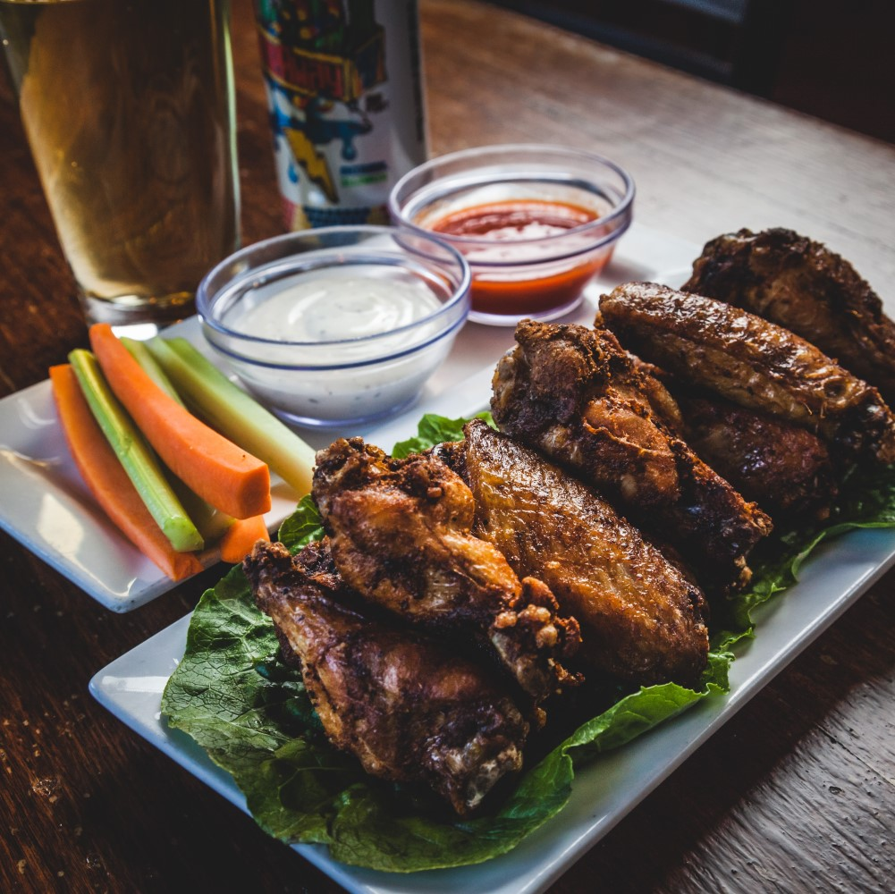
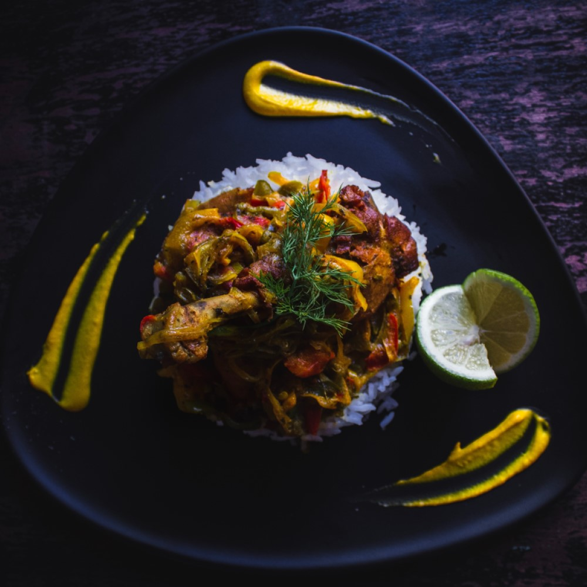
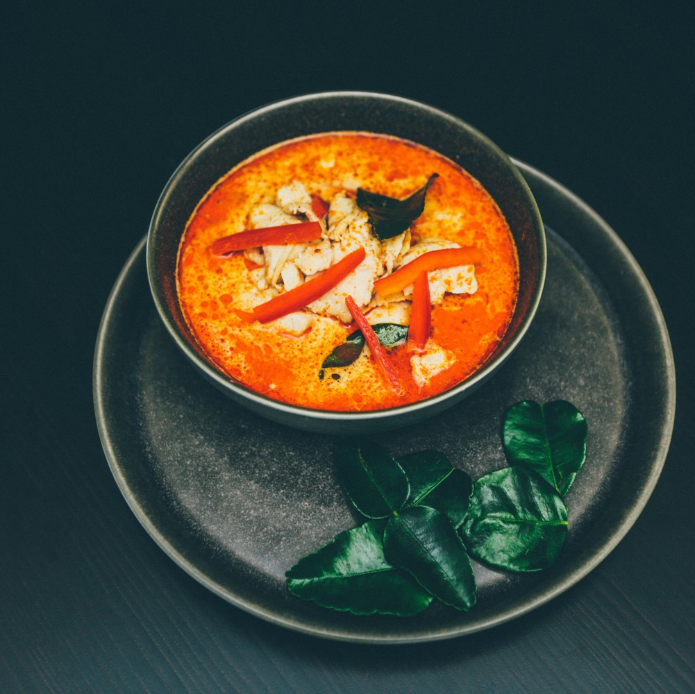

Ingredienser (4 port)
- 2 1/2 dl vetemjöl
- 1/2 tsk salt
- 6 dl mjölk
- 3 ägg
- Smör (till stekning)
- Sylt, bär eller frukt till servering
Så här gör du
- Blanda mjöl och salt i en bunke.
- Vispa i hälften av mjölken och vispa till en slät smet.
- Vispa i resten av mjölken och äggen.
- Lät smeten vila i ca 10 minuter.
-
Stek tunna pannkakor i lite smör, för varje pannkaka, i en stek
eller pannkakapanna.
- Servera med sylt,bär eller frukt.
Serverings förslag

